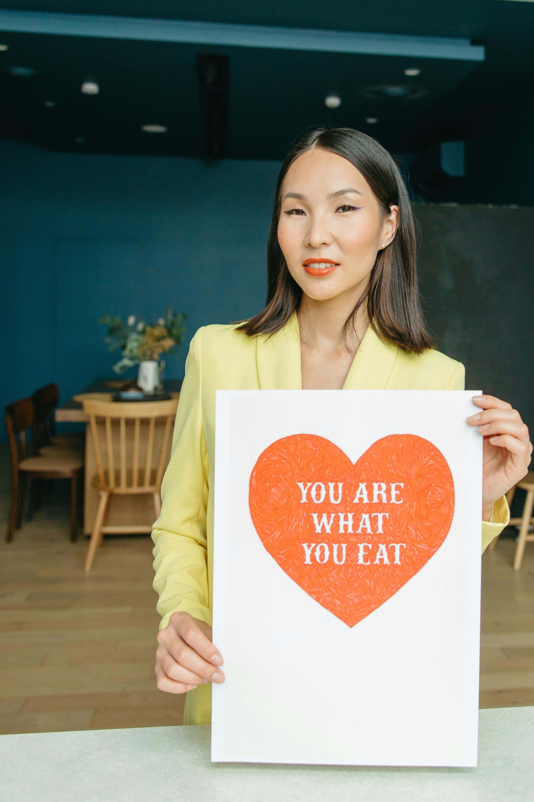

Your heart works hard every day, pumping life through your veins—so let's give it some love! Managing blood pressure isn't just about numbers; it's about caring for the engine that keeps you going. With the right food and habits, you can keep your heart happy and healthy for years to come!
Think of your heart like a car—it runs smoother when you fuel it with the right stuff. Whether you need to slow down a racing engine or jumpstart a low one, food can be your secret weapon. Let's explore how to keep your blood pressure balanced without sacrificing flavor or fun.
Here's your go-to guide for foods that can help balance your blood pressure:
Fasting: 70-90 mg/dL
Fasting: 91-125 mg/dL
Fasting: 126 mg/dL and above
Remember, your heart is the beat of your life—keep it strong with good choices today, and it will thank you tomorrow. Stay motivated, stay healthy, and don't forget to enjoy the journey!